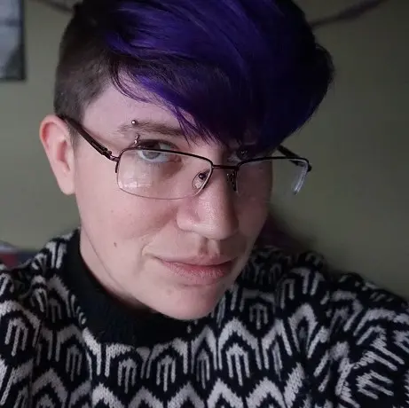

I study syntax within the framework of the Minimalist Program, and variationist sociolinguistics. In particular, I’m interested in synchronic and diachronic variation in third-person pronouns, and the interactions between pronouns and social identity. My dissertation, Pronouns Raising and Emerging, looks at these issues in English with particular focus on singular they.
Includes all the courses I’ve taught in syntax, sociolinguistics, and general linguistics/grammar topics.
My research includes work on pronouns, relative clauses, trans and nonbinary linguistics, and building sociosyntactic theory.
My blog posts and other writing, public talks and webinars, and podcast guest spots.
